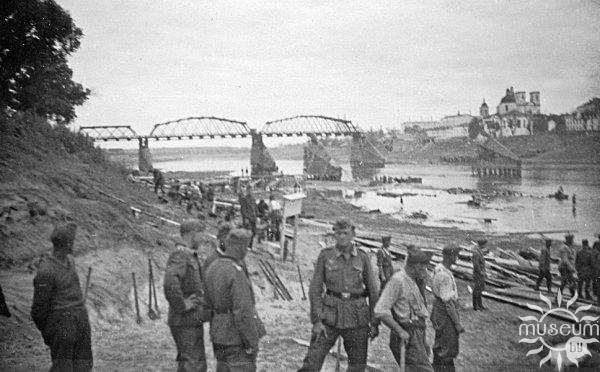
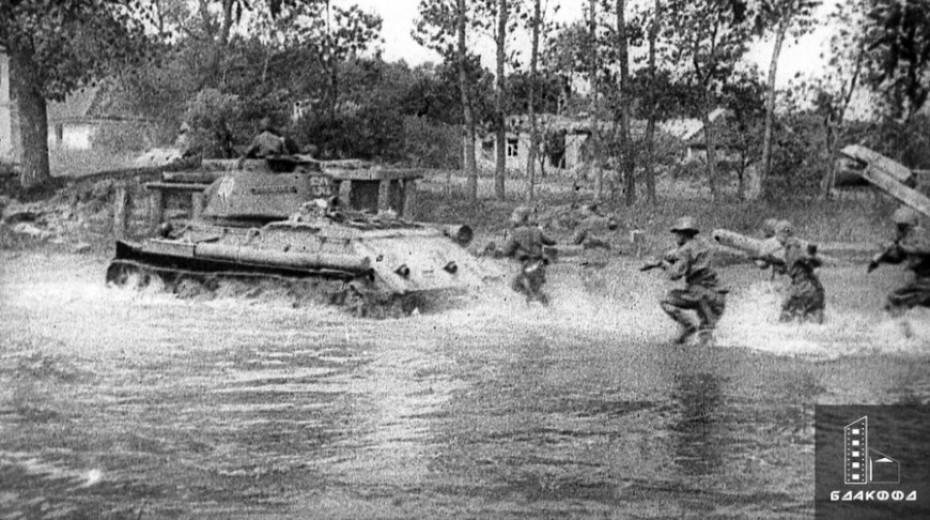

Окно в прошлое, взгляд в будущее
Память в кадре. Будущее в образе!
Начать путешествиеПамять в кадре. Будущее в образе!
Начать путешествиеИюль 1941 года. Полоцк – один из ключевых узлов обороны на северном фланге Западного фронта. Части 22-й армии Красной Армии, оборонявшие Полоцкий укрепрайон, сдерживали наступление элитных моторизованных дивизий вермахта. Несмотря на тяжёлые потери и окружение, советские бойцы замедлили продвижение врага, тем самым сыграв важную роль в подготовке Смоленского сражения. Город был оккупирован, но сопротивление не угасло — в лесах действовали партизанские отряды, а жители сохраняли веру в освобождение.
Летом 1944 года, в ходе операции «Багратион», Полоцк был освобождён. Это стало не только военной победой, но и актом исторической справедливости. Город, разрушенный и израненный, начал восстанавливаться. Сегодня память о тех событиях хранится в Музее боевой славы, на Кургане Бессмертия и в сердцах полочан. Полоцк – не просто точка на карте, а живая страница Великой Победы, где каждый камень помнит подвиг своих защитников.
«Окно в прошлое, взгляд в будущее» – это приглашение заглянуть в историю и представить, каким может стать её облик завтра. Мы открываем страницы памяти, чтобы вдохновиться подвигом, мужеством и стойкостью тех, кто защищал свободу. И вместе с этим – смотрим вперёд, создавая среду, которая говорит с уважением и теплом. Каждое место – это окно, через которое видно прошлое. И одновременно – это точка роста, которую можно преобразить. С помощью искусственного интеллекта вы можете загрузить фотографию и увидеть, как может выглядеть это пространство после благоустройства. Это не просто цифровой образ – это взгляд в будущее, где память становится основой для перемен, красоты и заботы.
Подробнее

Введите описание, и мы покажем, как это может выглядеть после благоустройства.

Здесь появится сгенерированное изображение